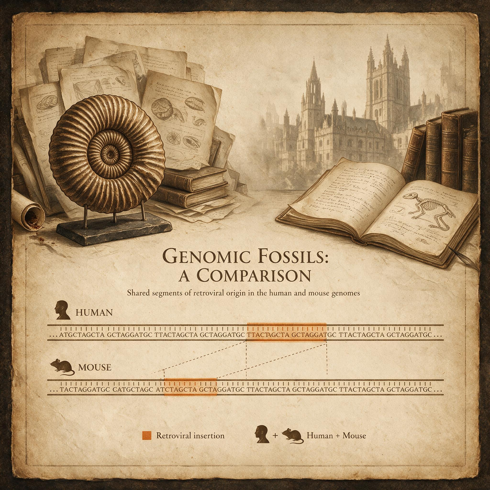

第 3 章
基因组里的化石
1987年的一个深夜，一位名叫玛格丽特的遗传学博士后坐在她的电脑前，屏幕上并排显示着两段DNA序列。左边是人类第21号染色体的一段，右边是小鼠对应区域。她已经盯着这段比对看了将近四

个小时，反复检查过参数设置，排除了软件故障的可能。让她困惑的不是两段序列的差异——人类和小鼠在演化道路上分道扬镳已经有七千五百万年，差异是理所当然的。
让她困惑的是相似。在这段通常被认为是“垃圾DNA”的非编码区域里，人类和小鼠的序列出现了异常高的匹配度，而且排列方式呈现出某种诡异的规律性。
序列两端是长末端重复序列，像一对括号括起中间几千个碱基对；内部结构包含了几个残破的基因——一个与病毒外壳蛋白高度相似的编码区，一个逆转录酶的残留片段，还有整合酶的痕迹。
这看起来像是一个完整的病毒基因组，被整齐地插在染色体上。玛格丽特调出了黑猩猩基因组的同一位置。完全一致。她重新倒了一杯咖啡，开始在心里排列这些现象的可能解释。
最可能的解释也是最荒唐的：人类和黑猩猩的共同祖先，以及人类和小鼠的共同祖先，都在他们各自生殖细胞的同一条染色体的同一个位置上，被同一种病毒感染过。或者，更省力的解释是——这个“病毒”从来就不是外来者。它是继承来的遗产，在哺乳动物的谱系中已经垂直传递了数千万年。
你已经知道人类基因组大约有三十亿个碱基对。如果把它们印成书，以每页三千个字母计算，那是一百万页的巨著。你终其一生都无法从头到尾读完它。
而在这百万页的生命蓝图中，大约二十四万页——整整百分之八——不是你的祖先写下的。它们来自远古的病毒。这个比例本身就足以颠覆我们对自身的认知。
我们习惯于把自己看作一个纯粹的生物学个体，一个基因边界清晰的物种。但当人类基因组计划将一个完整的参考序列摆上桌面时，遗传学家们发现自己面对的不是一本由种系传承写就的干净账本，而是一座层层叠叠的分子考古遗址。每一层沉积岩里都埋着外来者的墓碑。最令人震撼的不是墓碑的存在，而是它们的数量。超过十万条。
这是目前人类基因组中已识别出的内源性逆转录病毒序列的保守估计。如果把那些更古老、更残破、面目全非的片段也计算在内，总数量可能远不止于此。这些序列分散在二十三条染色体的各个角落，有些独自存在，有些成簇分布，有些甚至嵌套在其他更古老的病毒序列内部——像一个连续使用了四千万年的墓园，后来的墓碑插在前人的坟冢之上。
要理解这些分子化石是怎么来的，你需要先理解逆转录病毒独特的生活史。绝大多数病毒在宿主细胞内完成复制后会杀死细胞，释放出子代病毒颗粒，然后继续感染新的细胞。逆转录病毒可以这么做。它们也的确这么做。艾滋病病毒就是逆转录病毒家族的成员，它的致病机制就是不断感染和摧毁免疫细胞。
但逆转录病毒还有另一条路径，一条更安静、更深远的路径。它们携带的遗传物质是RNA。进入宿主细胞后，病毒并不急于自我复制，而是动用了自己的第一件工具——逆转录酶。这个酶的名字已经说明了它的功能：转录的反向操作。
正常的转录是从DNA到RNA，而逆转录酶从RNA倒回去合成DNA。想象你有一份满是修改痕迹的手稿，正常情况下只能复印出手写稿的样子，逆转录酶却能从手写稿反向推测出原始印刷版。
这份新合成的病毒DNA随后被运输进细胞核，在那里，病毒的第二件工具——整合酶——发挥它的作用。整合酶是一个分子剪刀加胶水。它在宿主染色体的DNA双螺旋上切开一个缺口，把病毒DNA嵌进去，然后再把切口封上。整个过程干净利落，几乎没有留下任何化学痕迹可以证明这里发生过断裂和重新连接。结果是：病毒的基因组成为宿主染色体的一部分，就像一个句子中间插入了一段外来语。
从此以后，每当宿主细胞分裂，复制自己的DNA时，这段病毒序列也一并被复制，一丝不苟，无休无止。
如果逆转录病毒只感染体细胞，这个故事就结束了。病毒DNA随着那个细胞的死亡而降解，永远不会向下传递。但逆转录病毒有时会感染生殖细胞——精原细胞、卵母细胞，或者发育早期的胚胎细胞。这些细胞是要进入下一代的。
当一个精子携带着插入在第七号染色体上的病毒序列与卵子结合，所产生的受精卵从单细胞阶段就已经包含了这段病毒DNA。这个受精卵发育成的个体，每一个细胞、每一个细胞核、每一份基因组拷贝里，都完整地继承了这段病毒的遗迹。一个让病毒基因组成为宿主演化遗产的循环就此闭合。
起初，这段病毒序列和一次普通的体细胞感染并没有本质区别。它包含了病毒全部的必需基因——外壳蛋白、逆转录酶、整合酶、蛋白酶。理论上，如果启动子序列完好，宿主细胞的转录机器会读出这段病毒基因，制造出完整的病毒RNA和蛋白质，组装出新的病毒颗粒，从细胞表面出芽释放。它仍然是一个活跃的病毒。
但一旦进入生殖系，这段病毒就面临了一个和自由病毒完全不同的演化环境。自由病毒在个体之间传播，承受的是免疫系统的选择和外在环境的压力。内源化的病毒承受的却是宿主体内的纯化选择。如果某个插入的病毒序列因为过度活跃，不停制造病毒颗粒，破坏了生殖细胞的正常功能，那个携带它的个体很可能无法正常发育或繁殖。
相反，如果病毒序列发生了某些突变，使它的基因产物失去功能，变成一个沉默的存在，它被传递给下一代的几率反而更高。
时间是最重要的变量。逆转录病毒的整合酶虽然切割和封口的速度很快，但它选择的插入位点并不是完全随机的——它偏好染色质开放区域，也就是那些正在活跃转录的基因附近。这意味着每一代新插入的病毒序列都可能落在宿主关键基因的旁边，有可能会干扰正常功能的运转。
然而，一旦某个插入事件发生在生殖细胞中并且被遗传下去，它就开始了一段长达数百万年的沉默。突变不断累积。逆转录病毒复制自己时依赖逆转录酶，而这个酶的保真度极低——它不像DNA聚合酶那样有校读修正功能。每复制一万个碱基对，大约就会引入一个错误。这个错误率是宿主DNA复制的一万倍。当病毒处于活跃的裂解期，这种低保真度是它的优势：高突变率产生多样性，帮助病毒逃避免疫系统和抗病毒药物。
但当病毒成为内源性序列，不再需要复制自己，它的DNA由宿主的高保真DNA聚合酶来复制时，突变率急剧下降到宿主的水平。然而，伤害已经造成。那些在病毒活跃期积累的突变已经固定在序列里，导致关键基因的阅读框发生了位移、终止密码子提前出现、启动子区域被甲基化修饰锁死。一代又一代，病毒序列变得越来越残破，越来越沉默。沉默到了极点，它就变成了基因组背景噪音的一部分。
遗传学家识别这些沉默的分子化石，依赖一个极其精巧的逻辑：比较基因组学。你不是只比较人类和黑猩猩。你要把更多的物种拉进来，画一张庞大的演化树。
方法的核心原理是这样的：如果一段病毒序列固定在人类种群的染色体上，它一定出现在物种形成的节点之后。你可以检查黑猩猩的对应位置。如果黑猩猩的基因组里也有一段高度相似的病毒序列，插在染色体的同源位置上，那么感染事件一定发生在人类和黑猩猩的共同祖先身上——大约六百万到七百万年前。再往外推。
如果大猩猩的对应位置也有相同序列，感染事件至少追溯到八百万到九百万年前。如果猕猴的对应位置也找到了，时间线就被拉长到两千五百万年前。小鼠的对应位置如果也有——时间线拉长到七千五百万年前，跨入了恐龙灭绝之后哺乳动物开始辐射分化的白垩纪末期。
玛格丽特在那个深夜对对的正是这样一个跨物种的位点。那段病毒序列不仅是人类和黑猩猩共享的，它贯穿了整个真哺乳亚纲，从人类到小鼠，从大象到蝙蝠，从鲸鱼到树懒，都插在基因组的同一条染色体、同一个基因旁边。感染事件发生的时代，可以追溯到大约一亿年前。
那时花朵刚刚在地球上出现，被子植物的繁盛还没有开始，哺乳动物的祖先还是躲藏在恐龙脚下的小型夜行动物。
一只长得像鼩鼱的小动物被逆转录病毒感染了。感染发生在它的一颗精原细胞或卵母细胞中。病毒序列插入了它的基因组。这只动物后来幸存下来，繁衍后代，它的后代又繁衍后代，沿着裂谷般分叉的演化道路，最终分化出了人类和小鼠。
而那个一亿年前的病毒插入，至今留在你我每一个细胞的第七号染色体上。它沉默了，残破了，但它没有被抹去。DNA从来没有忘记。
一个更惊人的案例来自二十世纪九十年代末。一组研究人员在筛选人类基因组中与胎盘形成相关的基因时，注意到一段序列。它编码的蛋白质有一个明显的特征：它能让细胞融合。两个相邻的细胞膜在它的作用下溶解重组成一个含有两个细胞核的合胞体。这个功能太像病毒了。许多病毒进入宿主细胞的方式就是利用融合蛋白将自己的病毒包膜与细胞膜合并。
研究人员回溯了这段基因的起源。他们发现它不是哺乳动物祖先自己演化出来的。它是一个内源性逆转录病毒的包膜蛋白基因。这个基因在病毒的外壳上有且只有一个用途——将病毒包膜与宿主细胞膜融合，让病毒核心进入细胞质。
但此刻，在人类和其他灵长类动物的基因组里，一段几乎完全相同的基因正在被转录、翻译，并大量表达在胎盘组织中。它所做的事情和病毒时期一样，也是促进细胞与细胞的融合。
只不过融合的双方不再是要入侵的病毒和被入侵的细胞，而是母亲子宫里的两个胎儿细胞，或者母亲细胞与胎儿细胞。
这个发现几乎推翻了我们对自我与非我的边界认知。一个外来的分子机器，经过几千万年的沉默后，被宿主征用，变成了一项生理功能的核心组件。胎盘——这个哺乳动物最具标志性的演化创新，这个让你我得以在母体内发育九个月而不被母体免疫系统排斥的器官——它的一把关键钥匙，是病毒递送的。
基因的名字叫做合胞素。在人类基因组里有两个版本，一个叫做合胞素-1，一个叫做合胞素-2。它们分别来自两次独立的、古老的逆转录病毒感染事件，发生在大约两千五百万年前和四千万年前。两次不同的逆转录病毒，两种不同的病毒包膜蛋白，在同一类细胞里被激活，服务于同一个目的：让胎盘外层的滋养层细胞融合成一道连续的屏障，调节母胎之间的物质交换。如果你觉得巧合难以置信，你并不是一个人。功能协同的演化需要漫长的选择和试错。
绝大多数内源的病毒基因在被宿主征用前，都经历了漫长的中性漂移和随机突变。而它们被征用的方式也并非一蹴而就。
起初，可能只是某段病毒序列的启动子恰好落在宿主某种转录因子的结合位点附近，导致它在生殖组织中被低水平地转录了一点。转录产物没有造成明显破坏，于是自然选择没有把它剔除。后来，转录产物中的某个蛋白质——也许是病毒结构的残留——刚好和宿主某个信号通路产生了微弱的相互作用。这个相互作用偶然有利于胎盘细胞的某种功能。更多的选择压力施加上来，转录水平被上调，蛋白质序列被精炼，结合位点被优化。数百万年的试错最终把一段入侵者的残骸改造成了一个精密的内源工具。
这就是“病毒作为演化引擎”最直观的证据。它不是化学反应的抽象驱动，不是在远离我们的海洋中发生的气候调节。它发生在你我每一个受精卵从单细胞发育成囊胚、囊胚着床形成胎盘的瞬间。没有那两次古老的逆转录病毒感染，哺乳动物的胎盘就不会是今天的样子。
而胎盘的演化——从卵生到原始胎生再到高度侵入性胎盘——是哺乳动物崛起的关键一步。它让母体能够更精细地控制胚胎的营养供给，让胚胎发育的后半程受到更严密的保护，让更大大脑容量的发育成为可能。
所以，当你坐在电脑前阅读这段文字时，你的身体里——确切地说，是你遗传自母亲的那份基因组的第七号染色体上——仍然刻着那个一亿年前感染事件留下的痕迹。你的胎盘（如果你是女性并且曾经生育）在形成过程中，依赖两个被驯化的病毒基因来构建合胞体层。你身体里大约百分之八的DNA来自类似的古老病毒插入事件，总数量超过十万条，分散在每条染色体的长臂和短臂上。
它们见证了一部截然不同的演化史。一部不只是由祖先的选择压力和偶然突变写成的历史，而是一部持续不断的外来基因入侵、插入、失活、沉默、被征用的历史。病毒不是这幅图景中的偶然噪音。它们是笔。
这把我们带回到那个循环了整章的核心张力。传统上，我们把病毒定义为病原体。
医学教科书的第一章告诉你，病毒是致病原，侵入宿主细胞，利用宿主资源自我复制，造成细胞损伤和组织病变，引发免疫反应和临床症状。这当然是对的。狂犬病病毒会沿着神经轴突爬进你的大脑，让你怕水、抽搐、昏迷直至死亡。天花病毒曾经杀死过的人类比所有战争加起来还要多。流感病毒每年在全球收割数十万生命。逆转录病毒家族的艾滋病病毒已经造成了超过四千万人死亡。在个体的时间尺度上，在临床的视野里，病毒是敌人。
但在演化的时间尺度上，在地质学的深度里，敌人变成了自己的一部分。每一场大流行都是病毒与宿主之间高速军备竞赛的缩影。而这场军备竞赛的遗迹，被逆转录病毒特有的插入机制所捕获，固定在了生殖系的基因组里。感染发生。
一些个体存活下来，将病毒序列遗传给后代。病毒序列在千万年中被沉默、被破坏、被转化为宿主基因调控网络中的新元件。然后新的病毒感染再次发生，新的序列再次插入，旧序列的残骸之上叠加着新序列的烙印，如同古城遗址上层层累积的夯土层。
百分之八这个数字不是一次性事件的结果。它是四亿年以来，一代又一代逆转录病毒持续感染生殖系并被固定下来的累积效应。它是病毒在与脊椎动物共同演化的漫长历史中，不断将自己写入宿主基因组的账本余额。
站在2024年的时间点上回望，科学界对这个问题的认知更新不过才进行了二十年出头。人类基因组计划完成于2003年。在那之前，遗传学家们知道人类基因组里存在一些重复序列，一些被叫做“转座子”的可移动元件，疑似来自病毒。
但他们并不清楚这些元件的总规模，更不知道其中相当大一部分属于逆转录病毒的残骸。当初始版本的基因组注释发布时，人们惊讶地发现，真正编码蛋白质的基因只占整个基因组的不到百分之二。余下的百分之九十八被讥讽为“垃圾DNA”，是演化过程中积累的无用废料。随后的比较基因组学和功能基因组学研究逐渐改变了这个看法。“垃圾”并不完全是垃圾。
许多非编码区域承担着基因调控功能，作为启动子、增强子、绝缘子或非编码RNA的编码序列，精细地控制着蛋白质基因何时何地以多少量表达。而在这些功能区中，一个显著的比例来源于古老的内源性病毒序列。那些曾经驱动病毒基因表达的启动子和增强子，经过突变的修饰后变成了驱动宿主基因表达的开关。一些逆转录病毒的长末端重复序列，在一亿年前是启动病毒转录的发动机，今天却成了某些胎盘基因、甚至某些脑部基因的启动子。
病毒入侵时留下的分子工具，被宿主拆卸、改装、利用。用生物学行话来说，这叫“分子驯化”；用更形象的比喻来说，你基因组里的每个角落都留着远古入侵者的武器，只不过那些武器已经被拆除保险、重新涂装，变成了你自己的家庭用具。这个事实的哲学重量大于它的医学生物学细节。四百年来，西方科学从笛卡尔的机械论身体观出发，把我们看作边界清晰、功能自主的生物机器。这台机器有自己的设计图纸——DNA。
设计图从父母那里继承而来，在发育过程中按部就班地表达，最终产出一个功能完整的个体。疾病是外来入侵者或者内部零件故障造成的结果。病毒，在这种图景里，是纯粹的破坏者。它们闯进机器的精密运转，劫持生产线，复制自己，毁掉机器完事。
但基因组数据讲述的故事完全不同。设计图不是一份，而是一本不断被批注、涂改和增补的活页手册。批注者是各种各样的可移动元件，其中最活跃、最强大的就是逆转录病毒。它们不仅批注，有时还撕下几页重新装订。我们的基因组不是一座圣殿，而是一座历经四十亿年战火、被反复征服和重建的城市。每一块砖都记录着某次入侵的痕迹，每一扇门都可能来自某个被驯服的寄生者。
我们以为自己是纯粹的主人，实际上我们从细胞核的内部开始就是混血的。每一次呼吸，每一次心跳，每一个胎盘在母亲子宫壁上轻柔地融合，都是这部被遗忘的共生史在当下的回响。现在回头再看那十万条病毒残骸。它们沉默地躺在那里，大多数永远失去了活性，只是分子化石，如同三叶虫的印痕压在页岩层里。
但其中一些——数字不大，但你已经知道其中的几个名字——在沉默了几千万年后被唤醒，被赋予全新的功能。合胞素-1和合胞素-2只是清单的开头。另一个被征用的病毒基因参与构建大脑皮层中的某些神经突触塑形。另一个在小肠的免疫屏障细胞中表达，帮助区分食物抗原和病原体抗原。另一个在肝脏的代谢网络中低调地完成着至今尚未完全被了解的工作。
这张清单在不断增长，每年都有新的发现。它们都是逆转录病毒曾经用来入侵细胞的分子武器，如今被解除武装，成为宿主生理功能中不可或缺的零件。它们的存在，把“病毒是生命的敌人”这个论断，从道德判断变为科学上不完整的陈述。病毒是敌人，没错，有时候。在许多个体生命的具体遭遇中，病毒的的确确是致命的敌人。
但病毒也是建筑师，是捐献者，是共同作者。人类基因组里那百分之八的病毒序列，就是这位共同作者留下的全部署名。你站在镜子前。这具身体里大约三十七万亿个细胞，每个细胞核里都有两米长的DNA，折叠成二十三对染色体。
其中大约一点六米来自祖先，零点一六米来自远古病毒。你可以把那条零点一六米的病毒来源序列拉出来，撑直，放在显微镜下追踪它的来源。它会告诉你，你的胎盘形成机制来自两千五百万年前的一次感染，你的某个神经突触调控元件来自六千万年前的一次插入，你的免疫调控网络中的某个开关来自一亿年前的那只像鼩鼱一样的哺乳动物祖先。这些古老的事件从未真正消失。
它们在演化时间的深处发生，然后被固定、遗传、重组、驯化，最终变成了你现在理所当然拥有的一切。这就是化石的意义。化石不是死的。它是在不同时间尺度上一致延展的过程。当你翻开石炭纪的煤层，看到蕨类植物的叶脉印痕时，你看到的是光合作用的引擎在三亿年前的运转。当你在电脑屏幕上比对人类和小鼠的基因组，找到保守的病毒插入位点时，你看到的是逆转录病毒在一亿年前将RNA转为DNA、整合进染色体、被遗传给后代的全套过程，被地层的沉积忠实记录。基因组的化石比岩石中的化石更精确。
它不只是形态的相似，而是线性的、连续的、用四个字母写就的分子文本，可以在不同物种之间逐碱基比对，追溯到单一一次感染的精确时间窗口。仅仅过去二十多年，这个领域几乎在所有方向上都遇到了未知的边界。我们还不知道基因组里那十万条病毒残骸中，到底有多少已经被宿主征用，具有实际功能。保守估计是数百条，但真正的数字可能远高于此——功能验证的实验耗时耗力，而高通量筛选工具才刚刚起步。
我们还不知道，为什么有些病毒插入会被沉默得干干净净，而另一些会在特定组织中重新激活，成为某些自身免疫疾病的风险因子。我们还不知道，在演化的深时间里，病毒的插入是否曾经导致过物种的突然分化——一次大规模的病毒感染事件，携带不同的基因元件进入初始种群的不同个体，是否可能在生殖隔离的形成中扮演了关键角色。我们不知道的事情太多。
但在这些未知中有一个清晰的判断正在成形：病毒不是基因组的背景噪音。它们是基因组变化的核心驱动者之一，与点突变、重组、基因重复并列为演化的四大引擎。
而其中，逆转录病毒独特的插入机制，使它成为唯一能够大规模、跨世代地引入全新功能模块的演化力量。你在进化论教科书中读到的那个“突变→选择→适应”的经典模式，它的基底在很大程度上曾经是、现在仍然是、将来还会是病毒在每一代宿主的生殖系中反复刻写、修改和捐赠基因元件的连绵过程。这个过程在四十亿年前生命起源的那一刻就已经启动。它将一直持续，直到地球上的最后一个细胞停止分裂。